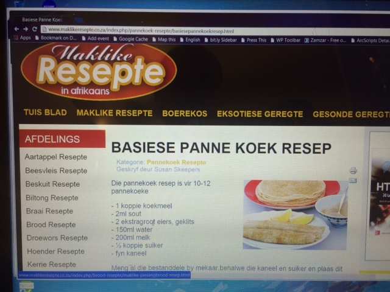

All About my Favorite Food
 Food is more than something to eat. It is deeply cultural, meaningful, steeped in context. Here is something I like to make on weekend mornings once in a while. It's a quiet time of introspections, colored by scenes half-remembered from my childhood. The morning is quiet, and nobody else is up. Sunlight is streaming in the east-facing kitchen window, and my coffee is made. It's time to prepare pancakes.
Food is more than something to eat. It is deeply cultural, meaningful, steeped in context. Here is something I like to make on weekend mornings once in a while. It's a quiet time of introspections, colored by scenes half-remembered from my childhood. The morning is quiet, and nobody else is up. Sunlight is streaming in the east-facing kitchen window, and my coffee is made. It's time to prepare pancakes.
The recipe is a simple one, with just a few ingredients. The ingredients are staples that could be found in any farmhouse pantry. A cup of flour. Two eggs. Three-quarters of a cup of water and a cup of milk. Half a teaspoon of salt. Mix it all together into a runny batter and put it into the fridge. Have some more coffee and listen to the house start to wake up.